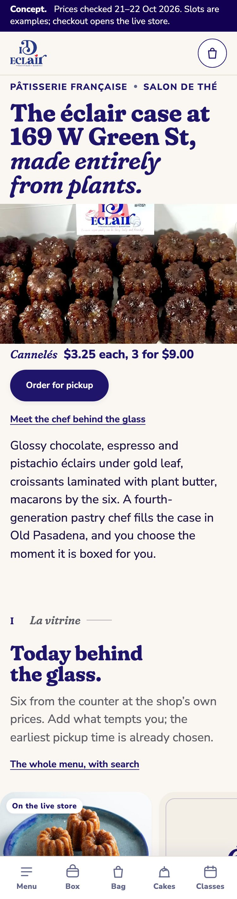
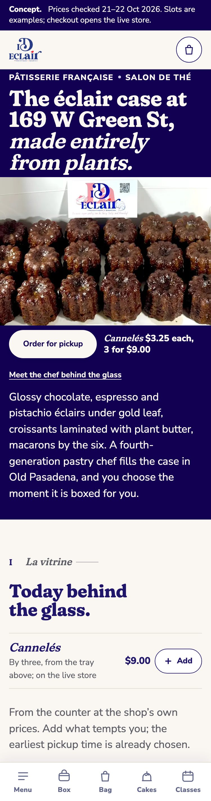
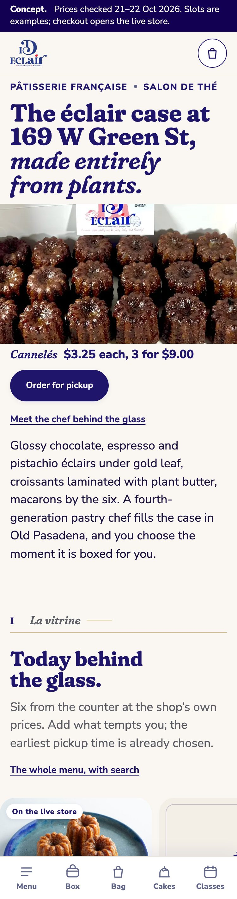

Review board · 24 October 2026
Your new site for 169 W Green St, ready to choose.
Everything the studio has built for the shop sits on this one page. Start with the recommended home page, look at the eleven directions it grew from, then answer three questions. Open each link on your phone: that is how most customers will meet it.
1The recommended direction
The home blend: Salon’s story, Carte’s order strip.
One home page made from the two strongest directions below.

Why this one
- The story sells as it goes. The afternoon on Green Street is told in chapters, from la vitrine to l’invitation, and every chapter closes on something to add or book.
- Six taps to checkout, from anywhere. Add two pastries, a box of six and pay in 6 taps with the earliest slot kept. Pastries and jars from the live store reach the Shopify cart in 3 taps, one fewer than before.
- The pickup time never hides. A Pickup, Add, Pay strip follows you down the page and now rides on every inner page too. The slot picker opens 1.3 phone screens down instead of 5.2, though the box of six still sits about 6 screens down the home page.
Measured on a 375 px phone screen in a test browser on 22 October 2026. Counter items still pay at the shop until the pickup app joins checkout.
Open the recommended home2Three moods of the blend
The same page, three moods.
Pictures only: the page itself has not changed. Each one moves a single colour decision, so you can say which mood feels like the shop. Tap a picture to see it full size.
Ivory, as builtNothing moved. The whole page sits on --color-canvas, the warm ivory.
A deep indigo openingMore than one variable: the opening takes --color-brand-deepas its ground, and in its text column ink, brand and muted turn ivory while the button turns ivory with indigo type.
Salon’s gold hairlineMore than one variable, and a new colour: there is no gold token yet, so two rules paint Salon’s gold on the line beside each chapter numeral and under each chapter heading. The chapter names stay indigo, because gold text on ivory is too faint to read.


- Ivory: nothing moved; the page sits on
--color-canvas. - Deep indigo opening: more than one variable; the opening takes
--color-brand-deepand its text turns ivory. - Salon’s gold: more than one variable and a new colour; gold lines at the chapter heads, names still indigo.
3Eleven directions to compare
Where the blend came from.
Eleven complete home pages for the same shop, seven built on 22 October and four on 24 October. All eleven share one bag, the pickup slots, the box of six and the Shopify checkout. Taps count the same path on a phone: two items, a box of six, the bag and Checkout.
-

Direction 01
Vitrine
The first screen indexes every line of the business, then the whole case sits at its real prices on six shelves.
Best for showing the whole range at once, for customers who browse.
6 taps, 8 with your own slot · box and slot 7.2 screens down
Open Vitrine -

Direction 02
Salon
One afternoon at 169 West Green Street in four chapters, each closing a sale where the story builds the appetite.
Best for first visits and afternoon tea.
6 taps, 8 with your own slot · box and slot 8.2 screens down
Open Salon -

Direction 03
Atelier
The logo’s indigo becomes the room the chef works in, and the page runs like a documentary of his bench.
Best for the chef’s training, the press and the evening tone.
6 taps, 8 with your own slot · box and slot 6.7 screens down
Open Atelier -

Direction 04
Marché
The box of six is the first act: a live builder over the real box photo, then a counter rail of 18 items.
Best for morning phone orders and the macaron box.
6 taps, 8 with your own slot · box and slot 4.4 screens down
Open Marché -

Direction 05
Carte
The whole counter is the home page: the real menu as a printed French carte, with a sticky Slot, Add, Pay strip.
Best for regulars and the lunch rush.
6 taps, 10 with your own slot · box and slot 4.2 screens down
Open Carte -

Direction 06
Maison
The shop presented like the great Paris houses, selling by leading with gifts, from the $140 Golden Ticket to coffrets.
Best for gifts, holidays and office orders.
6 taps, 8 with your own slot · box and slot 6.1 screens down
Open Maison -

Direction 07
Frontier
One day at 169 W Green St in eight chapters, each with a working buying tool that feeds the one bag.
Best for guided shoppers who want help choosing.
6 taps, 8 with your own slot · box and slot 9.5 screens down
Open Frontier -

Direction 08
Comptoir
The first phone screen is the order: three to start at their real prices, the earliest pickup already chosen, the box of six one and a half screens down.
Best for regulars who know what they want and order from the sidewalk.
6 taps, 8 with your own slot · box and slot 1.5 screens down
Open Comptoir -

Direction 09
Galerie
The case set as a museum catalogue, one numbered planche to a phone screen, the shop’s own photographs in mats, prices as captions.
Best for gifting and customers who shop with their eyes.
6 taps, 9 with your own slot · box 5.6 screens down, slot in the strip from the first Add
Open Galerie -

Direction 10
Fête
One page dressed for the calendar: 25 skins through 2027, from Halloween and Noël to Bastille Day and Macaron Day, each one night’s change that reverts on its own.
Best for a shop that wants to feel alive all year without rebuilding anything.
6 taps, 8 with your own slot · box and slot 3.0 screens down · today opens in the Halloween skin
Open Fête -

Direction 11
Concierge
A counter assistant on the page: it answers from the shop’s own facts, prices and hours, fills a box of six from a sentence, composes a cake request, and says “the shop can tell you” when it does not know.
Best for questions at 9 pm, gluten and allergy checks, and showing that the shop’s tech is as considered as its pastry.
Rules answer 25 of 30 sample questions with no model call · live-store adds carry the Shopify cart link · voice where the browser supports it
Open Concierge -
All eleven side by side
The options board shows every first screen with its argument and the three things each does best.
Open the options board
4The pages every direction shares
Six pages behind every home.
Whichever direction you pick, these pages stay, with the same bag and the same Pickup, Add, Pay strip.
- Menu
Every éclair, croissant, macaron and jar on one page at the shop’s prices, with search and a pickup time at the top.
- Cakes
Three ways to order a cake, from a message on a $15 mousse cake to a six-step design request for the chef.
- Classes
The macaron class on Tuesdays, 3:30 to 5:30 pm, $125 a seat, and the Golden Ticket as a gift.
- La Cave
The wine room next door, Wednesday to Sunday 3 to 9 pm, with the $100 cheese board and table requests.
- Story
The chef’s path, from a family of pastry cooks to Old Pasadena, with the press and the salon de thé.
- Merch
The planned merchandise line: eight first-run pieces, numbered macaron tins and three things to order today.
5Merch and cutters
Things to carry home.
The merchandise page
Eight first-run pieces with one French line each, the numbered tins, and the pieces already on the live store.
Open the merch page42 cookie cutters for the shop’s year
The six house pastries, a set for each season from Saint-Valentin to New Year, and a « merci » stamp plate, each ready to print.
Recipe notes on the cutter board still need the chef’s eye before anything is printed.
Open the cutter board6How to give feedback
Three questions for the chef.
Short answers are fine. A word per question is enough to start the next round.
- Which direction?The home blend, or one of the eleven. If a mood above feels more like the shop, say which.
- What should it keep from the others?A headline, a photo, a section, the way one of them sells gifts or classes.
- What is missing?A product, a fact about the shop, a question customers ask at the counter, something that feels wrong.
Send your answers to the studio by text or email, whichever is easier. A voice note or a photo of a sketch works too.
There is no form on this page, on purpose: nothing you type here is stored or sent.
7What happens next
From your pick to launch on 30 November.
The plan for a launch on Monday 30 November. You sign off twice; everything else the studio carries.
- Discovery and proposalto 28 October
Five answers about the shop and proof of who owns the domain, then a written proposal to accept.
- Agreementto 30 October
A signed agreement and access to the Shopify store as a collaborator.
- Approval 1: the directionby Tuesday 3 November
You pick the direction in writing. It locks the colours and type for the build.
- Photos and filesinputs by Sunday 8 November
Menu, prices, allergens, logos and a one-day photo shoot at the shop in the third week.
- Pickup app on the current site9 November
Pickup days and times go live early, so the Thanksgiving box has a real slot.
- Build and review2 to 25 November
The theme, apps and products, then a preview link and two rounds of your feedback.
- Approval 2: the final siteby Friday 27 November
You approve the finished theme before it goes live.
- LaunchMonday 30 November
Live on id-eclair.com, with the old theme kept ready as the fallback.
If the inputs slip past 8 November, the launch moves whole to 4 January 2027, after the holiday freeze.